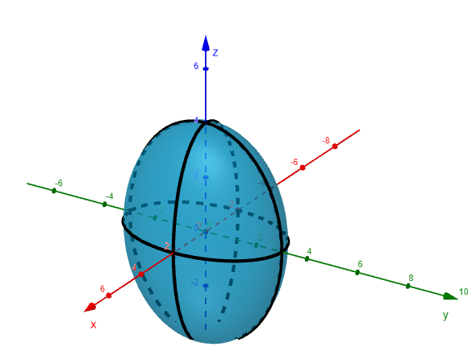
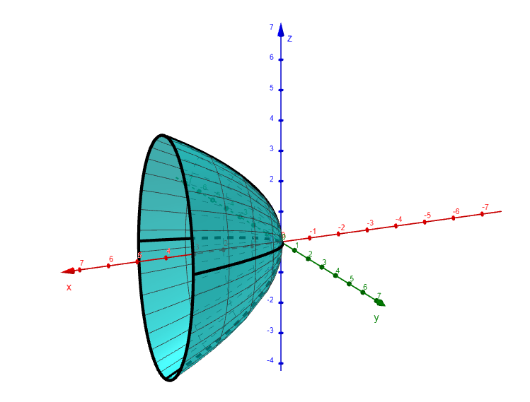
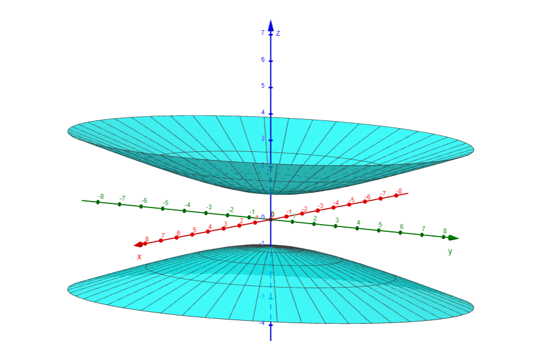
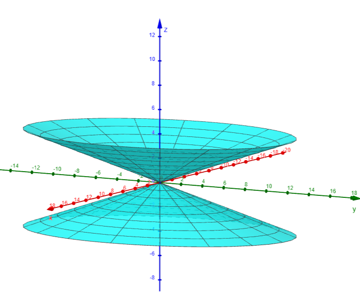
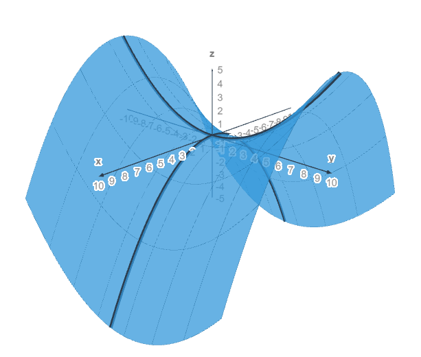
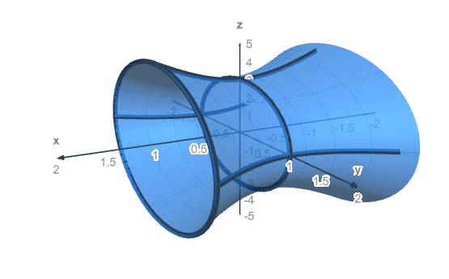
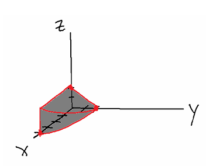
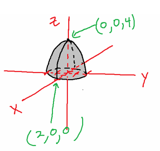

Homework 12.2 - Answers
-
- Ellipsoid

- Elliptic paraboloid

- Hyperboloid of two sheets

- Elliptic cone

- Hyperbolic paraboloid

- Hyperboloid of one sheet

- Ellipsoid
-
- `x = -[(y + 2)^2/4 + (z - 5)^2/4]`, Elliptic paraboloid.
- `(x - 4)^2 + (y + 2)^2 + (z - 7)^2 = 25`, Sphere (or ellipsoid) with center `(4, -2, 7)` and radius `5`
-

-
